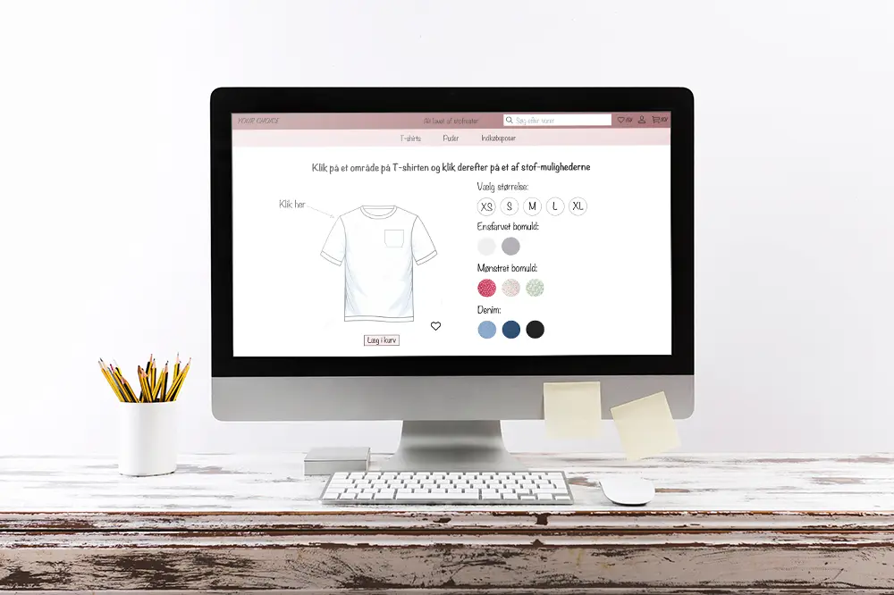
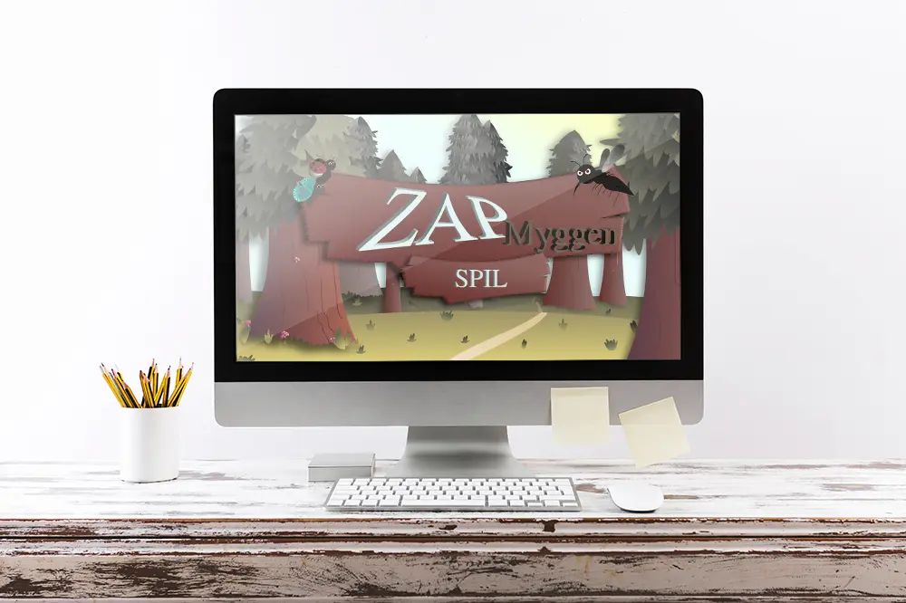

Tema 2 - Grundlæggende HTML
Responsive site V2

Tema 3 - Grundlæggende UX
Prototype 2

Tema 3 - Grundlæggende UX
UX pitch deck

Tema 4 - Animation
Opgave

Tema 5 - Grundlæggende indhold
Pilotsite

Tema 5 - Redesign og temadokumentation
Opgave

Tema 6 - Portfolio eksamen
Portfolio eksamen